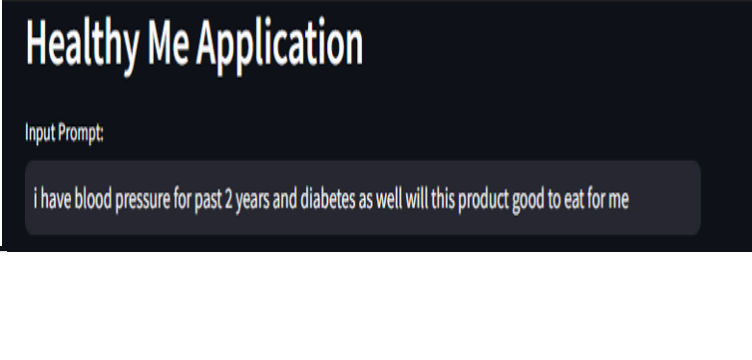

Understanding Packaged Food: An Insightful Solution
In today's fast-paced world, convenience often comes in the form of packaged foods. However, many consumers are unaware of the potential health implications of the ingredients lurking within these products. The packaged food industry is notorious for its use of high chemical additives, misleading labeling, and deceptive marketing tactics.
As a result, individuals with health conditions such as blood pressure or diabetes often struggle to decipher which foods are truly safe for consumption. They face the dilemma of not knowing whether the ingredients listed on the packaging are genuinely beneficial or potentially harmful to their well-being.
To address this issue and empower consumers with knowledge about the foods they consume, I have developed an innovative solution in the form of a web application.
The Purpose of the Project
The primary objective of this project is to provide individuals with a user-friendly tool that enables them to make informed decisions about the packaged foods they purchase and consume. The application serves as a comprehensive resource for assessing the nutritional value and potential health implications of packaged food products.
How It Works
The application utilizes advanced image recognition technology to analyze the ingredients listed on the packaging of a food product. Users can simply upload a photo of the product's label, and the application will automatically identify and evaluate the ingredients.
In addition to image analysis, users have the option to input text describing any health concerns or dietary restrictions they may have, such as blood pressure or diabetes. This personalized input enables the application to provide tailored recommendations based on individual health needs.
This image above shows how the site's interface looks like.
In this image shown that you have to just write the problems currently you are having.
Then you can click the "Browse File" button, and then click the photo whose ingredients you want to check.
Below there is a button "Tell Me About", click it and wait; you will get the response.
This is how the response look like.
Benefits to Users
By using this application, users can:
- Gain insights into the nutritional content of packaged food products
- Identify potentially harmful additives or ingredients
- Make informed decisions about food purchases based on individual health conditions
- Receive personalized recommendations for healthier alternatives
Ultimately, this project aims to empower individuals to take control of their dietary choices and improve their overall health and well-being.
Conclusion
The prevalence of packaged foods in today's society underscores the importance of providing consumers with the tools they need to make educated decisions about their diet. By creating this application, I hope to bridge the gap between consumers and the packaged food industry, fostering greater transparency and accountability.
Together, we can empower individuals to make healthier choices and lead happier, more fulfilling lives.
Use the application here.